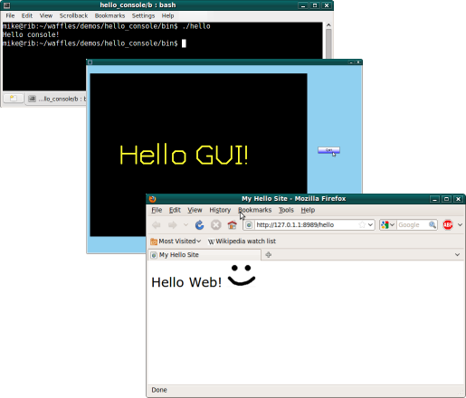
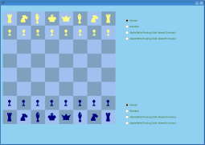
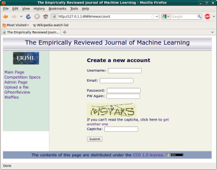
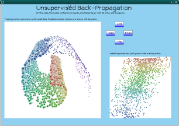

Back to the docs page
Previous Next
Waffles Demo Apps
The following is a brief description of each of the demo apps that come with Waffles, to help you pick the one that is closest to your needs.
Hello World Apps
So, you want to build a machine learning tool? Often, getting started is the most difficult part. Starting with a simple "Hello World" app can be a big boost to get things going. We provide 3 Hello World apps. Each of them is already linked with our tools, so you can just start writing your code.
If you just want a simple console program, hello_console is the one for you. It simply prints a message to the console.
Often, it is important to be able to visualize machine learning algorithms as they learn/progress. If you have such a need, you might want to start with hello_gui. It is a bit bigger than hello_console. It demonstrates a simple graphical interface that gives you full control via model-view-controller architecture. (It's not designed to look pretty--there are many better GUI interfaces for building nice-looking consumer-oriented apps. This one is designed to be simple, and to give you total control.)
Finally, if you want to create a machine-learning tool that is accessible to the whole world, then hello_web might be a good starting point. It is essentially a server that links with our machine learning tools and uses a web-based interface.
|

|

|
Car on Hill
This is a classic game for testing an agent. The idea is there's a car that doesn't have enough power to drive directly over the hill. If the agent is smart, it should eventually figure out that it can get the car over the hill by rocking back and forth.
If you're in mouse mode, a human player controls the car with the mouse. When the mouse is left of the little black arrow near the top, the car goes in reverse. When the car is right of the little black arrow, the car goes forward. Yeah, I know this a wierd interface, but it's not the kind of game you're going to spend hours playing anyway, so I'm not going to spend a lot of time improving it.
If you're in Q-learner mode, a Q-learner agent will try the problem. It will eventually solve it, but it takes a rather long time. To speed things up a bit, you can uncheck the "Slow" box. It goes a lot faster when it doesn't have to keep redrawing the entire scene. When you want to see what's going on again, just check the box again.
|
Chess
This demo let's you play against the computer at a game of chess. It demonstrates alpha-beta pruning. If you want to test the intelligence of some algorithm at this game, this demo might help to get you started. (Castling, en passant, and getting a piece back when a pawn crosses the board are not yet implemented. We prefer to keep things simple. There are much better chess-playing implementations out there.)
|

|

|
Interpolate
This demo lets you select a supervised learning algorithm. It trains the model with the pixel values from a tiny image (shown in the top-left corner). Then, it uses the model to predict sub-pixel values, in order to generate a big version of the image.
The primary purpose of this demo is to give you a feel for what the various algorithms do. (There are better techniques for blowing up images.) Note that the nearest-neighbor and decision tree algorithms may appear to do much better jobs than the neural algorithms. This may be deceptive, however, because their models are orders of magnitude larger.
|
Journal
At some point, it seems, almost every scholar has an idea for starting a new journal that operates in some a-typical manner. This demo is a framework for the back-end of an on-line journal, to help get you started.
|

|
Manifold Sculpting
This demonstrates the Manifold Sculpting algorithm. (This is one of my older demos, and the code is not very clean--sorry.) This demo has 4 parts:
Swiss Roll Demo - Starts with a collection of points in 3D space on a 2D Swiss Roll manifold, and reduces the data to two dimensions.
Semi-supervised Demo - This is the same as the Swiss Roll Demo, but when it's done, click on the 'X' and it will randomly pick 5% of the data to use to supervise the next pass. Then it will do it again. Note that it's much faster the second time because it has some supervision.
S-Curve Demo - Starts with points in 3D space on an 2D S-Curve manifold, and reduces the data to two dimensions.
Entwined Spirals Demo - Starts with points in 3D space on a 1D manifold of entwined spirals, and reduces the data to one dimension.
|

|

|
Paint
This is a simple painting program. It demonstrates various image processing techniques. For example, the "Smart Select" tool uses graph-cut with hierarchical region ajacency graphs to make it quick and easy to select objects within a scene. (Right-click to add a positive example. Left-click to add a negative example. With just a few training examples, it can often correctly select precisely the region you want.) I included this demo because I find that I periodically want to try various machine learning ideas for processing images, and this demo provides a convenient place to test these ideas.
|
Q-Learning
This is a pretty typical q-learning demo. Basically, there is a grid-world with an obstacle in the middle. The agent starts in one corner and tries to get to the other corner. The policy is printed periodically to the console.
|
|

|
Ray Tracer
This is a demo of the GRayTrace class. It lets you pick a ".rib" file, and then it ray-traces the scene. If you check the "High Quality" box, it will take longer, but will do a nicer job.
My ".rib" parser doesn't support all the features of the ".rib" file format, so it might not be able to load your own ".rib" files. This is just a demo. If you want to turn it into a usable tool, there's a bit of work to do.
One might ask, what does this demo have to do with machine learning? Well, I often use my simple ray-tracer to generate collections of images to prove my manifold learning algorithms. (Manifold learning algorithms are useful for extracting intrinsic variables from high-dimensional observations, such as ray-traced images.) I mostly keep this demo because it is a quick and easy way to test that my ray-tracer is working properly. (Of course there are certainly better ray-tracers out there, but mine is simple and is already integrated with my library, so for experiments I generally prefer to use mine.)
|
Recommender System
This is a fully functional recommender system. Basically, users rate a few items, and then it figures out which other items they are most likely to appreciate. It uses a logistic regression model to compute a latent personality vector for each person, and to predict the person's preferences.
In order to really see how well this demo works, you might need to get a few colleages to help try it. The more people that submit ratings, the better the recommendations it makes.
When you first use it, be sure to create a user named "root". This use can add new topics to the system.
|

|
|

|
Unsupervised Back-Propagation
This demo uses an unsupervised form of back-propagation to train a multi-layer feed-forward neural network to fit a set of points. The input features are also determined as latent values.
|
|
Previous Next
Back to the docs page
|